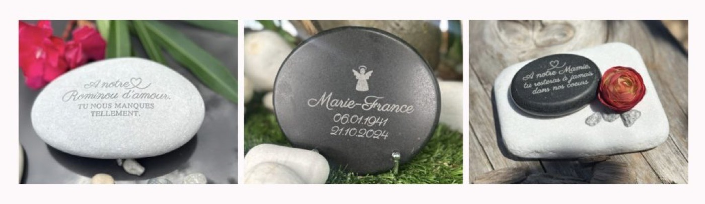

Quand on cherche à honorer la mémoire d’un être cher, les mots-clés qui reviennent souvent sont « mémorial familial », « souvenir durable », ou encore « hommage original ». Ce sont ces mots, tapés dans les moteurs de recherche, qui vous ont peut-être guidés jusqu’ici. Et si vous êtes là, c’est sans doute parce que vous recherchez autre chose qu’un simple objet funéraire.

Pourquoi choisir un mémorial original ?
Les souvenirs que nous portons méritent mieux qu’un hommage standardisé. Ils méritent quelque chose d’unique, de sincère, de personnel. Un mémorial familial original, c’est une façon de raconter une histoire, d’ancrer une mémoire dans le réel. Cela peut être un lieu, un geste, une photo… ou un objet symbolique qui traverse le temps.
Une idée simple et profondément touchante : les galets gravés
Dans la continuité de cette quête d’authenticité, je vous propose une idée qui touche par sa simplicité :
Déposer de vrais galets naturels, gravés avec soin, sur la tombe d’un proche ou dans un jardin du souvenir.
Chaque galet est unique, comme l’être aimé qu’il représente.
Chaque gravure – un prénom, un mot tendre, une date – est là pour durer.
Et la pierre naturelle, intemporelle, devient alors le témoin silencieux de ce lien qui ne meurt jamais.
Un rituel doux et accessible
Offrir ou déposer un galet personnalisé, c’est aussi une façon d’impliquer toute la famille. Certains choisissent de graver les prénoms de leurs enfants ou petits-enfants, et d’en faire un mémorial collectif. D’autres préfèrent un simple mot, une pensée discrète… mais qui dit tout.
Un hommage qui s’inscrit dans la nature
Ce type de mémorial a aussi une dimension écologique et symbolique :
la pierre vient de la terre, elle ne pollue pas, elle résiste au temps.
Elle s’inscrit dans une démarche simple, durable et profondément humaine.